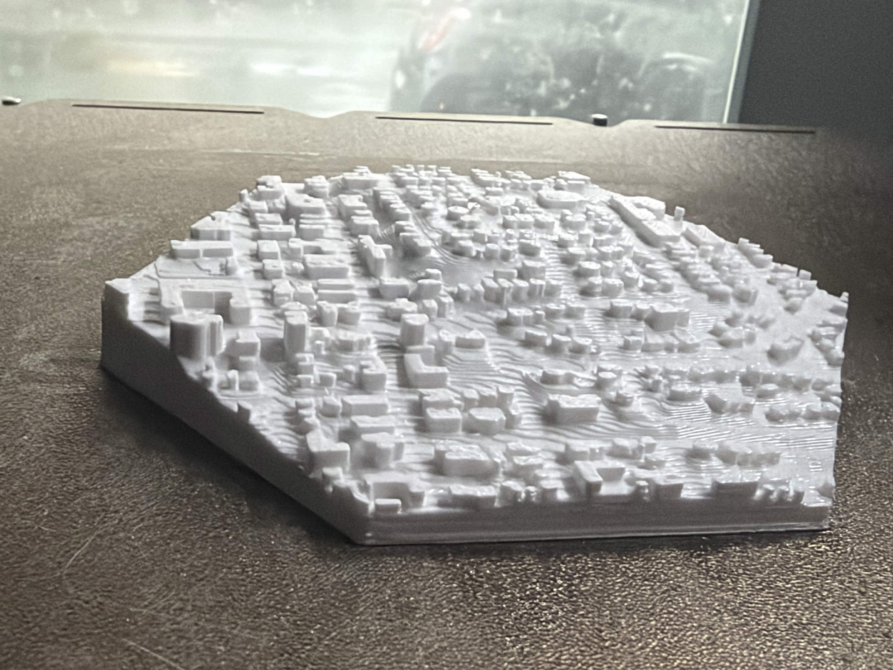
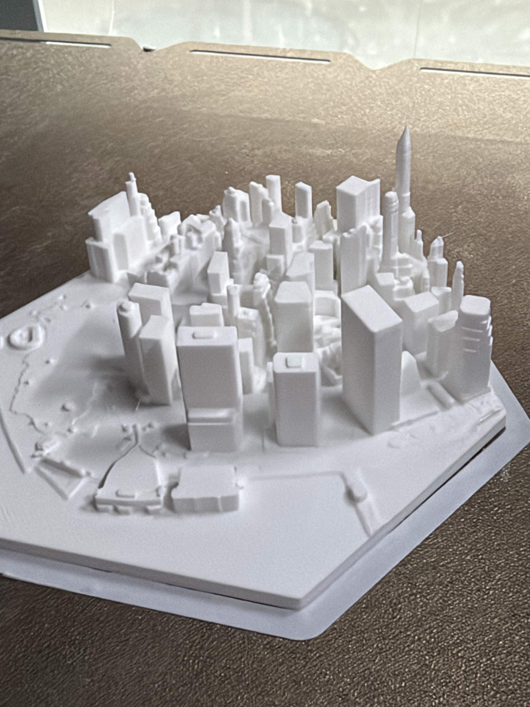

Day 25
Is this a map?
I used the updated City Download Portal to 3D print two pieces of city geography. On one, the streets climb a hill. On the other, a skyline rises from the tip of an island.
Explore the 3D models ↓

Seattle, Washington
Queen Anne
Look along the streets to see how the whole neighborhood climbs with the terrain.


New York City
Lower Manhattan
Follow the waterfront around the southern tip and see how closely the towers are packed behind it.
Explore in 3D
Drag to rotate. Scroll or pinch to zoom. Use the arrow keys and + or − when the model is focused.
Reading the relief
Both prints are 100 mm across at their widest. On Queen Anne, much of the rise comes from the ground itself. In Lower Manhattan, the towers supply most of the height. In a relief map, those differences are part of the surface you can trace with a finger.
Open the City Download Portal ↗